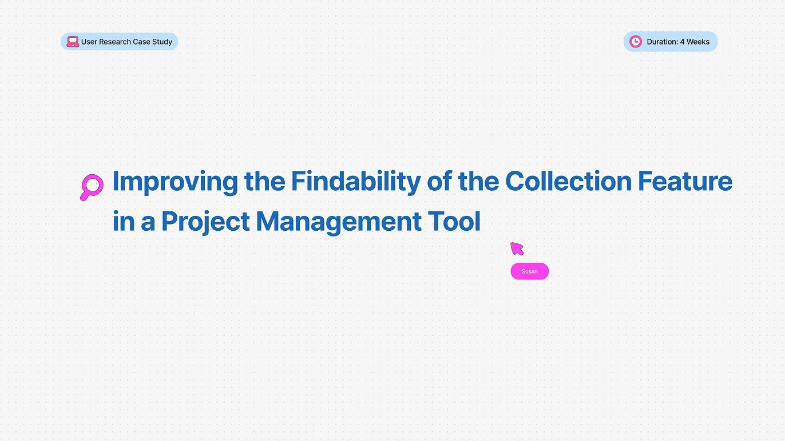
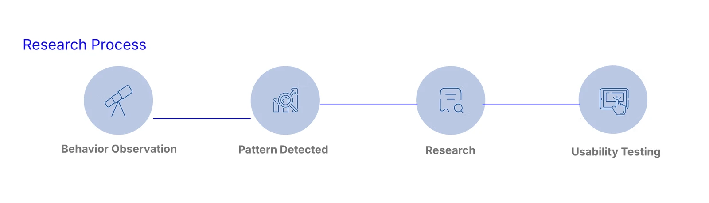
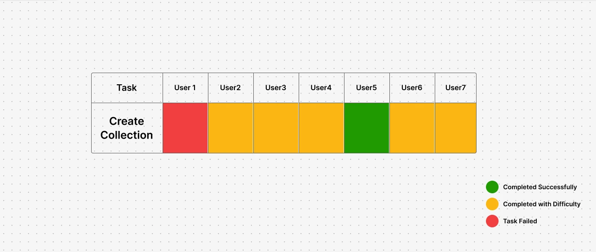
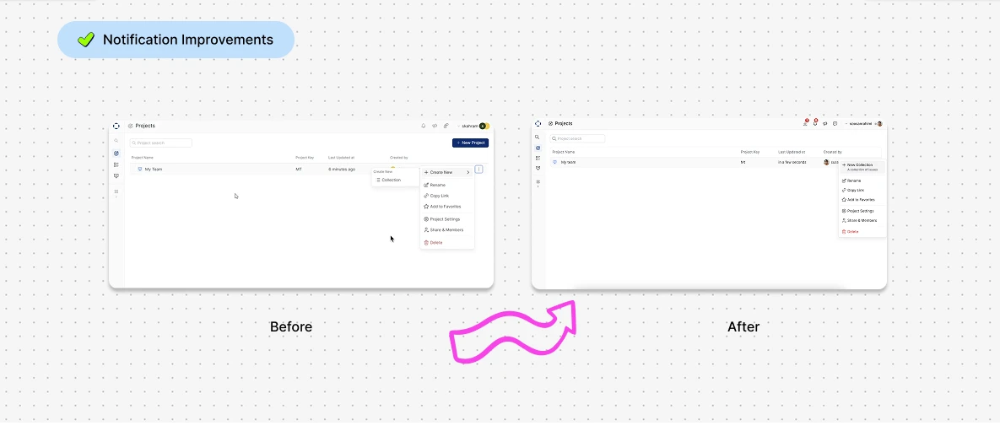
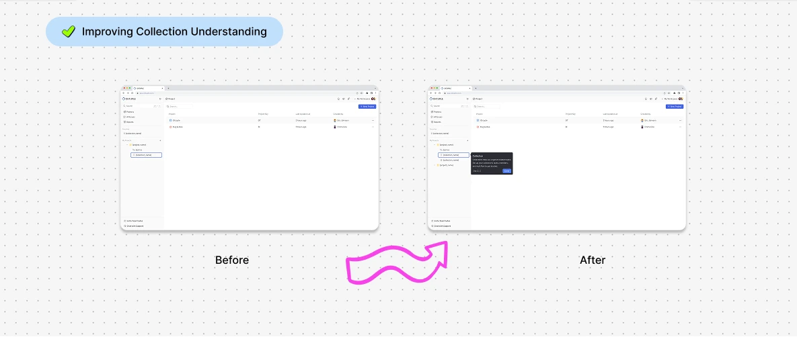
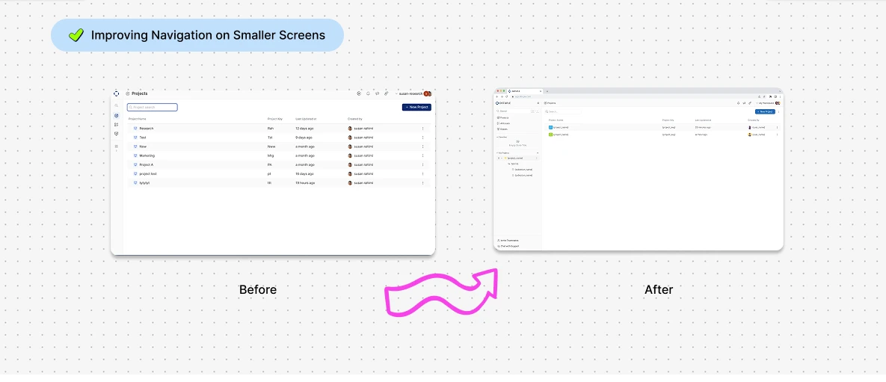
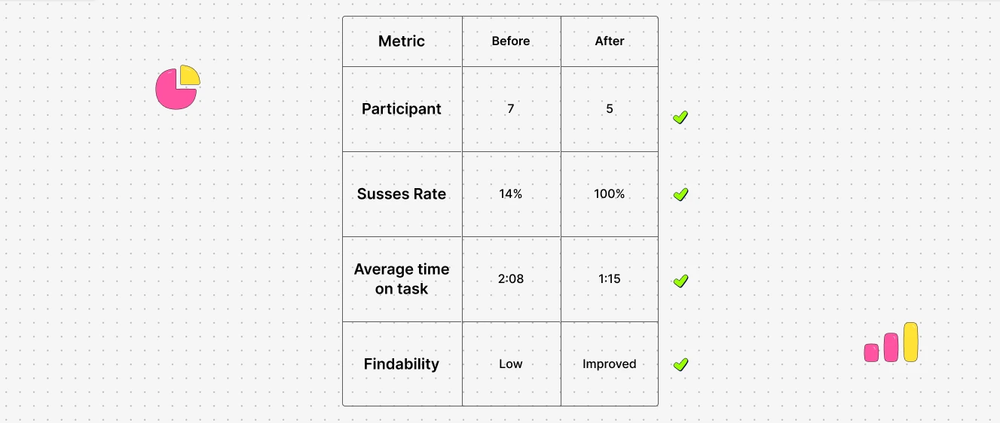

Improving the Findability of the Collection Feature in a Project Management Tool

Research Plan
Background
The product is a project management platform designed for agile teams and was in its pre-launch stage during this study. Before releasing the product publicly, the team wanted to validate whether one of its core workflows—creating and managing Collections—was easy to discover and understand for target users.
To support this goal, I conducted usability research to identify usability issues, understand user behavior, and provide evidence-based recommendations before launch.

Problem Discovery
While reviewing user behavior, I noticed that several users struggled to locate the Collection feature.
To better understand the issue, I analyzed approximately 15 session recordings in Microsoft Clarity. A consistent behavioral pattern emerged, suggesting that users experienced difficulty discovering this feature.
Common behaviors included:
- Repeated clicks across different interface areas
- Extensive navigation through menus
- Long pauses before locating the feature
- Extended time before initiating the Collection creation process
These observations indicated a potential discoverability issue and prompted a more in-depth usability investigation.
Research Hypothesis
Based on behavioral observations and findings from an earlier discovery survey, I formulated the following hypotheses:
- The concept of Collection was not sufficiently clear to users.
- The information architecture did not align with users' mental models.
- The placement of the feature reduced its discoverability.
Research Hypothesis
Users struggle to discover the Collection feature because both its concept and placement do not align with their expectations and mental models.
Research Methodology
Moderated Remote Usability Testing
Target Audience
Experienced project management professionals with at least two years of hands-on experience using project management tools, including:
- Product Managers
- Scrum Masters
Usability Test Result
Task completion
- ✅ 1 participant completed the task successfully.
- ⚠️ 5 participants completed the task with significant difficulty and long completion times.
- ❌ 1 participant was unable to complete the task.

Finding1 — Navigation Issue
Observation
The Create Collection action was hidden inside a submenu, making it difficult for users to discover.
Evidence
- Participants repeatedly navigated through different sections.
- Most users spent considerable time searching for the creation path.
Recommendation
Expose the Create Collection action directly within the navigation hierarchy.
Finding2 — Lack of Concept Clarity
Observation
Users struggled to understand the purpose of Collection.
The current product provided no explanation, onboarding, or contextual guidance, leaving users without the necessary mental model to understand the feature.
Recommendation
- Add supporting microcopy.
- Introduce contextual onboarding.
- Explain the feature during first-time use.
Finding3 — Screen Size Affects Discoverability
Observation
- Participants using an expanded sidebar located the Collection feature more quickly.
- On smaller screens, the collapsed navigation and limited visual cues made it difficult for users to understand the project hierarchy and discover the feature.
Recommendation
- Expand the relevant navigation section by default on smaller screens.
- Surface the project hierarchy within the Project page.
- Improve visual cues for expandable navigation items.
Key Research Insights
- Users need to understand the concept of Collection before they can successfully use it.
- Discoverability depends not only on feature placement but also on users' mental models.
- Clearly exposing the project hierarchy significantly improves users' ability to discover the Collection feature.



Validation & Iteration
- Based on the research findings, the product team implemented a series of design improvements to improve the discoverability and clarity of the Collection feature.
- A second moderated usability test was then conducted with 5 participants to validate the effectiveness of these changes.
Outcomes

Reflection
This project reinforced the importance of validating design assumptions with real users. While the initial hypothesis focused on navigation issues, the research revealed that conceptual clarity played an equally important role in feature discoverability. Iterative testing allowed the team to validate design decisions and confidently improve the user experience.